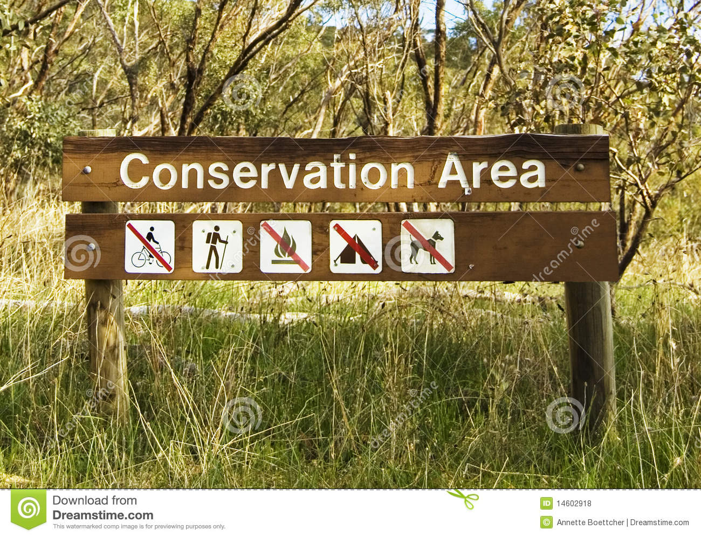

Protected areas are designated territories set aside for
the preservation of biodiversity and cultural heritage. However, the management and protection of these areas
can be a complex and challenging task. Issues surrounding protected areas can range from conflicts with local
communities over the use of resources to insufficient funding and inadequate management practices. Climate change,
habitat loss, and overexploitation of natural resources also pose a significant threat to the integrity of protected
areas and the species they are meant to protect. Furthermore, the increasing demand for land and resources has led to
pressure on protected areas, which in turn can lead to degradation of their ecosystems. Addressing these issues is
crucial for the successful management and protection of protected areas and the preservation of the valuable biodiversity
and cultural heritage they contain.
Importance of protected areas in today's world:
The importance of protected areas in today's world can be summarized as follows:
Biodiversity conservation: Protected areas provide vital habitats for the preservation of biodiversity and the species that depend on them.
Climate change mitigation: Protected areas help to mitigate the impacts of climate change by serving as carbon sinks and providing critical ecosystems services.
Climate change mitigation: Protected areas help to mitigate the impacts of climate change by serving as carbon sinks and providing critical ecosystems services.
Economic benefits: Protected areas can provide economic benefits through ecotourism and other forms of sustainable development.
Scientific research: Protected areas provide important opportunities for scientific research and the study of ecosystems and species.
Recreational opportunities: Protected areas also offer recreational opportunities for the public, such as hiking, camping, and wildlife viewing.
Future generations: Protected areas help to ensure that future generations will have the opportunity to enjoy and benefit from the earth's natural resources and biodiversity.
In conclusion, protected areas play a critical role in preserving biodiversity and cultural heritage, mitigating the impacts of climate change, and providing economic and recreational benefits.
It is crucial that these areas are adequately funded, managed, and protected to ensure their continued success in achieving their conservation goals.
Until recently, values and benefits from protected areas have often been taken for granted and underestimated.
The book entitled National Park: Management and Conservation demonstrates that there are deep necessities in how the wider scientific, environmental,
socioeconomic, and cultural values that these natural ecosystems provide should increasingly be recognized.
The book highlights various approaches for managing and conserving protected areas to respond to some pressing
global challenges today such as climate change, demand for food and energy, over exploitation, and habitat change.
For this purpose, the book is published to address these issues like protected
Areas, biodiversity conservation, Plant conservation strategy and many more which are explained below.
Protected areas :
1. 
Protected area refers to as geographical space, recognized, dedicated,
and managed through legal or other effective means, to achieve the long-term
conservation of nature with associated ecosystem services and cultural values
[1]. The definition of protected area is expanded into six categories.
The first category is further divided into two subcategories, i.e.,
strict nature reserve and wilderness area. Strict nature reserve is designated
for the conservation of biodiversity and geological and geomorphological
features. In this reserve, visitation, use, and impacts of humans are controlled
and limited to ensure that the conservation values are protected. Meanwhile, the
wilderness area normally deals with large unmodified or slightly modified areas
that retain their natural character and influence. To ensure that natural
conditions are protected and preserved, the areas are without permanent or
significant human habitation.
Biodiversity conservation :
2.
Biodiversity can be defined as the variety of plants, animals, and microorganisms that exist,
the genes they contain, and the ecosystems they live in. It provides a variety of goods and services
and supports our economy and lifestyles. Man has a moral duty to conserve it to ensure long-term sustainability
for human survival and future generations. Trees are an example of critical component of biodiversity.
The diversity of life that a tree can support is incredible. For example, in the tropical rainforests, a
single tree can house up to 2000 different species of insects, birds, amphibians, reptiles, mammals, fungi, mosses,
and epiphytic plants. Unfortunately, natural habitats everywhere are declining. Therefore, the establishment of
protected area networks is essential for biodiversity conservation and thus helps to reduce its loss. As habitats are
lost, we are also losing various types of precious flora and fauna. No one would have thought, even a few years ago,
that some species from the families of Dipterocarpaceae, Grammitidaceae, and Begoniaceae could be extinct, but now
they are. Protected areas can be used as complementary measures to achieve sustainable use of biodiversity and
protect many threatened and endemic species from becoming vanished.
Plant conservation strategy:
3.
In many tropical countries throughout the world, much of the forest has lost as a result from rapid changes in
land use and land cover since the last few decades. In Malaysia, for example, the changes in land use cover,
particularly to agricultural land, rubber, and oil palm cultivation, are the major contributors of this conversion
when the country gained independence. For example, in the 1960s, the 70% of land in Peninsular Malaysia was under
natural forest cover; however, 10 years later, only 60.9% of forested area remained due to massive land development
schemes during that period [2]. By 1980, the natural forest cover further declined to 49.4% (Forest Statistics,
Peninsular Malaysia (1979–1985)) and has now stabilized at 44.5% since 1997 [3] as most of the land more suitable to
agriculture has been cleared, leaving hilly, mountainous, and marginal lands and protected areas for wildlife sanctuaries.
The Upper Thames River Conservation Authority (UTRCA) is a body based in London, Ontario, Canada.
It was created in 1947. It was responsible for the construction of the Fanshawe Dam, completed in the 1950s,
to control flooding from the Thames River, which runs through London. During the last ice age, the site of London
was the terminus of a large glacier. When the region warmed at the end of the ice age, the glacier melted and
receded North, leaving behind a drainage ditch and features such as Sifton Bog. As such, the Thames is a watershed
for most of Western Ontario, and is therefore highly susceptible to seasonal flooding. In 1937, such flooding had
devastating consequences, destroying over 1,000 homes, and causing millions of dollars in damage.Today, the Upper
Thames River Conservation Authority is mainly a not-for-profit agency which monitors flora and fauna welfare in the
area and gives tours to local kids on school field trips.
A Short video about Canadian Protected & Conserved Areas created by
UTRCA: